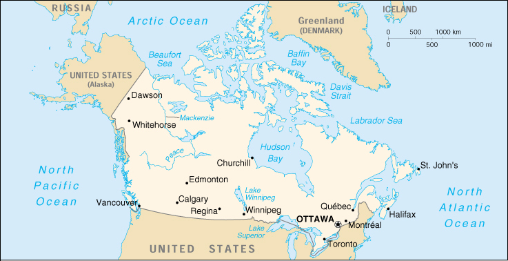

![[Country Flag of Canada]](../flags/ca-lgflag.jpg)
| Canada |
|
         |  | |
| Introduction |
Background: A land of vast distances and rich natural resources, Canada became a self-governing dominion in 1867 while retaining ties to the British crown. Economically and technologically the nation has developed in parallel with the US, its neighbor to the south across an unfortified border. Its paramount political problem continues to be the relationship of the province of Quebec, with its French-speaking residents and unique culture, to the remainder of the country.
| Geography |
Location: Northern North America, bordering the North Atlantic Ocean and North Pacific Ocean, north of the conterminous US
Geographic coordinates: 60 00 N, 95 00 W
Map references: North America
Area:
total:
9,976,140 sq km
land:
9,220,970 sq km
water:
755,170 sq km
Area - comparative: slightly larger than the US
Land boundaries:
total:
8,893 km
border countries:
US 8,893 km (includes 2,477 km with Alaska)
Coastline: 243,791 km
Maritime claims:
contiguous zone:
24 nm
continental shelf:
200 nm or to the edge of the continental margin
exclusive economic zone:
200 nm
territorial sea:
12 nm
Climate: varies from temperate in south to subarctic and arctic in north
Terrain: mostly plains with mountains in west and lowlands in southeast
Elevation extremes:
lowest point:
Atlantic Ocean 0 m
highest point:
Mount Logan 5,959 m
Natural resources: iron ore, nickel, zinc, copper, gold, lead, molybdenum, potash, silver, fish, timber, wildlife, coal, petroleum, natural gas, hydropower
Land use:
arable land:
5%
permanent crops:
0%
permanent pastures:
3%
forests and woodland:
54%
other:
38% (1993 est.)
Irrigated land: 7,100 sq km (1993 est.)
Natural hazards: continuous permafrost in north is a serious obstacle to development; cyclonic storms form east of the Rocky Mountains, a result of the mixing of air masses from the Arctic, Pacific, and North American interior, and produce most of the country's rain and snow
Environment - current issues: air pollution and resulting acid rain severely affecting lakes and damaging forests; metal smelting, coal-burning utilities, and vehicle emissions impacting on agricultural and forest productivity; ocean waters becoming contaminated due to agricultural, industrial, mining, and forestry activities
Environment - international agreements:
party to:
Air Pollution, Air Pollution-Nitrogen Oxides, Air Pollution-Persistent Organic Pollutants, Air Pollution-Sulphur 85, Air Pollution-Sulphur 94, Antarctic Treaty, Biodiversity, Climate Change, Desertification, Endangered Species, Environmental Modification, Hazardous Wastes, Marine Dumping, Nuclear Test Ban, Ozone Layer Protection, Ship Pollution, Tropical Timber 83, Tropical Timber 94, Wetlands, Whaling
signed, but not ratified:
Air Pollution-Volatile Organic Compounds, Antarctic-Environmental Protocol, Climate Change-Kyoto Protocol, Law of the Sea, Marine Life Conservation
Geography - note: second-largest country in world (after Russia); strategic location between Russia and US via north polar route; nearly 90% of the population is concentrated within 160 km of the US/Canada border
| People |
Population: 31,281,092 (July 2000 est.)
Age structure:
0-14 years:
19% (male 3,077,994; female 2,932,821)
15-64 years:
68% (male 10,714,305; female 10,591,494)
65 years and over:
13% (male 1,683,704; female 2,280,774) (2000 est.)
Population growth rate: 1.02% (2000 est.)
Birth rate: 11.41 births/1,000 population (2000 est.)
Death rate: 7.39 deaths/1,000 population (2000 est.)
Net migration rate: 6.2 migrant(s)/1,000 population (2000 est.)
Sex ratio:
at birth:
1.05 male(s)/female
under 15 years:
1.05 male(s)/female
15-64 years:
1.01 male(s)/female
65 years and over:
0.74 male(s)/female
total population:
0.98 male(s)/female (2000 est.)
Infant mortality rate: 5.08 deaths/1,000 live births (2000 est.)
Life expectancy at birth:
total population:
79.43 years
male:
76.02 years
female:
83 years (2000 est.)
Total fertility rate: 1.64 children born/woman (2000 est.)
Nationality:
noun:
Canadian(s)
adjective:
Canadian
Ethnic groups: British Isles origin 28%, French origin 23%, other European 15%, Amerindian 2%, other, mostly Asian, African, Arab 6%, mixed background 26%
Religions: Roman Catholic 42%, Protestant 40%, other 18%
Languages: English 59.3% (official), French 23.2% (official), other 17.5%
Literacy:
definition:
age 15 and over can read and write
total population:
97% (1986 est.)
male:
NA%
female:
NA%
| Government |
Country name:
conventional long form:
none
conventional short form:
Canada
Data code: CA
Government type: confederation with parliamentary democracy
Capital: Ottawa
Administrative divisions: 10 provinces and 3 territories*; Alberta, British Columbia, Manitoba, New Brunswick, Newfoundland, Northwest Territories*, Nova Scotia, Nunavut*, Ontario, Prince Edward Island, Quebec, Saskatchewan, Yukon Territory*
Independence: 1 July 1867 (from UK)
National holiday: Canada Day, 1 July (1867)
Constitution: 17 April 1982 (Constitution Act); originally, the machinery of the government was set up in the British North America Act of 1867; charter of rights and unwritten customs
Legal system: based on English common law, except in Quebec, where civil law system based on French law prevails; accepts compulsory ICJ jurisdiction, with reservations
Suffrage: 18 years of age; universal
Executive branch:
chief of state:
Queen ELIZABETH II (since 6 February 1952), represented by Governor General Adrienne CLARKSON (since 7 October 1999)
head of government:
Prime Minister Jean CHRETIEN (since 4 November 1993)
cabinet:
Federal Ministry chosen by the prime minister from among the members of his own party sitting in Parliament
elections:
none; the monarch is hereditary; governor general appointed by the monarch on the advice of the prime minister for a five-year term; following legislative elections, the leader of the majority party in the House of Commons is automatically designated by the governor general to become prime minister
Legislative branch:
bicameral Parliament or Parlement consists of the Senate or Senat (a body whose members are appointed to serve until reaching 75 years of age by the governor general and selected on the advice of the prime minister; its normal limit is 104 senators) and the House of Commons or Chambre des Communes (301 seats; members elected by direct popular vote to serve five-year terms)
elections:
House of Commons - last held 2 June 1997 (next to be held by NA June 2002)
election results:
percent of vote by party - Liberal Party 38%, Reform Party 19%, Progressive Conservative Party 19%, Bloc Quebecois 11%, New Democratic Party 11%, other 2%; seats by party - Liberal Party 155, Reform Party 60, Bloc Quebecois 44, New Democratic Party 21, Progressive Conservative Party 20, independents 1
note:
seats by party as of December 1999 - Liberal Party 157, Reform Party 57, Bloc Quebecois 44, New Democratic Party 20, Progressive Conservative Party 19, independents 4
Judicial branch: Supreme Court, judges are appointed by the prime minister through the governor general
Political parties and leaders: Bloc Quebecois [Gilles DUCEPPE]; Liberal Party [Jean CHRETIEN]; New Democratic Party [Alexa MCDONOUGH]; Progressive Conservative Party [Joe CLARK]; Reform Party [Preston MANNING]
International organization participation: ABEDA, ACCT, AfDB, APEC, AsDB, Australia Group, BIS, C, CCC, CDB (non-regional), CE (observer), EAPC, EBRD, ECE, ECLAC, ESA (cooperating state), FAO, G- 7, G-10, IADB, IAEA, IBRD, ICAO, ICC, ICFTU, ICRM, IDA, IEA, IFAD, IFC, IFRCS, IHO, ILO, IMF, IMO, Inmarsat, Intelsat, Interpol, IOC, IOM, ISO, ITU, MINURCA, MINURSO, MIPONUH, MONUC, NAM (guest), NATO, NEA, NSG, OAS, OECD, OPCW, OSCE, PCA, UN, UN Security Council (temporary), UNCTAD, UNDOF, UNESCO, UNFICYP, UNHCR, UNIDO, UNIKOM, UNMIBH, UNMIK, UNMOP, UNTAET, UNTSO, UNU, UPU, WCL, WFTU, WHO, WIPO, WMO, WTrO, ZC
Diplomatic representation in the US:
chief of mission:
Ambassador Raymond A. J. CHRETIEN
chancery:
501 Pennsylvania Avenue NW, Washington, DC 20001
telephone:
[1] (202) 682-1740
FAX:
[1] (202) 682-7726
consulate(s) general:
Atlanta, Boston, Buffalo, Chicago, Dallas, Detroit, Los Angeles, Minneapolis, New York, and Seattle
consulate(s):
Miami, Princeton, San Francisco, and San Jose
Diplomatic representation from the US:
chief of mission:
Ambassador Gordon D. GIFFIN
embassy:
100 Wellington Street, K1P 5T1, Ottawa
mailing address:
P. O. Box 5000, Ogdensburg, NY 13669-0430
telephone:
[1] (613) 238-5335, 4470
FAX:
[1] (613) 238-5720
consulate(s) general:
Calgary, Halifax, Montreal, Quebec, Toronto, and Vancouver
Flag description: three vertical bands of red (hoist side), white (double width, square), and red with a red maple leaf centered in the white band
| Economy |
Economy - overview: As an affluent, high-tech industrial society, Canada today closely resembles the US in its market-oriented economic system, pattern of production, and high living standards. Since World War II, the impressive growth of the manufacturing, mining, and service sectors has transformed the nation from a largely rural economy into one primarily industrial and urban. Real rates of growth have averaged nearly 3.0% since 1993. Unemployment is falling and government budget surpluses are being partially devoted to reducing the large public sector debt. The 1989 US-Canada Free Trade Agreement (FTA) and 1994 North American Free Trade Agreement (NAFTA) (which included Mexico) have touched off a dramatic increase in trade and economic integration with the US. With its great natural resources, skilled labor force, and modern capital plant Canada enjoys solid economic prospects. Two shadows loom, the first being the continuing constitutional impasse between English- and French-speaking areas, which has been raising the possibility of a split in the federation. Another long-term concern is the flow south to the US of professional persons lured by higher pay, lower taxes, and the immense high-tech infrastructure.
GDP: purchasing power parity - $722.3 billion (1999 est.)
GDP - real growth rate: 3.6% (1999 est.)
GDP - per capita: purchasing power parity - $23,300 (1999 est.)
GDP - composition by sector:
agriculture:
3%
industry:
31%
services:
66% (1998)
Population below poverty line: NA%
Household income or consumption by percentage share:
lowest 10%:
2.8%
highest 10%:
23.8% (1994)
Inflation rate (consumer prices): 1.7% (1999)
Labor force: 15.9 million (1999)
Labor force - by occupation: services 75%, manufacturing 16%, construction 5%, agriculture 3%, other 1% (1997)
Unemployment rate: 7.6% (1999)
Budget:
revenues:
$121.8 billion
expenditures:
$115.1 billion, including capital expenditures of $1.7 billion (1998)
Industries: processed and unprocessed minerals, food products, wood and paper products, transportation equipment, chemicals, fish products, petroleum and natural gas
Industrial production growth rate: 4.3% (1999 est.)
Electricity - production: 550.852 billion kWh (1998)
Electricity - production by source:
fossil fuel:
27.18%
hydro:
59.77%
nuclear:
12.25%
other:
0.8% (1998)
Electricity - consumption: 484.515 billion kWh (1998)
Electricity - exports: 39.502 billion kWh (1998)
Electricity - imports: 11.725 billion kWh (1998)
Agriculture - products: wheat, barley, oilseed, tobacco, fruits, vegetables; dairy products; forest products; fish
Exports: $277 billion (f.o.b., 1999 est.)
Exports - commodities: motor vehicles and parts, newsprint, wood pulp, timber, crude petroleum, machinery, natural gas, aluminum, telecommunications equipment, electricity
Exports - partners: US 84%, Japan 3%, UK, Germany, South Korea, Netherlands, China (1998)
Imports: $259.3 billion (f.o.b., 1999 est.)
Imports - commodities: machinery and equipment, crude oil, chemicals, motor vehicles and parts, durable consumer goods, electricity
Imports - partners: US 77%, Japan 3%, UK, Germany, France, Mexico, Taiwan, South Korea (1998)
Debt - external: $253 billion (1996)
Economic aid - donor: ODA, $2.1 billion (1997)
Currency: 1 Canadian dollar (Can$) = 100 cents
Exchange rates: Canadian dollars (Can$) per US$1 - 1.4489 (January 2000), 1.4857 (1999), 1.4835 (1998), 1.3846 (1997), 1.3635 (1996), 1.3724 (1995)
Fiscal year: 1 April - 31 March
| Communications |
Telephones - main lines in use: 18.5 million (1999)
Telephones - mobile cellular: 3 million (1999)
Telephone system:
excellent service provided by modern technology
domestic:
domestic satellite system with about 300 earth stations
international:
5 coaxial submarine cables; satellite earth stations - 5 Intelsat (4 Atlantic Ocean and 1 Pacific Ocean) and 2 Intersputnik (Atlantic Ocean region)
Radio broadcast stations: AM 535, FM 53, shortwave 6 (1998)
Radios: 32.3 million (1997)
Television broadcast stations: 80 (plus many repeaters) (1997)
Televisions: 21.5 million (1997)
Internet Service Providers (ISPs): 750 (1999 est.)
| Transportation |
Railways:
total:
36,114 km; note - there are two major transcontinental freight railway systems: Canadian National (privatized November 1995) and Canadian Pacific Railway; passenger service provided by government-operated firm VIA, which has no trackage of its own
standard gauge:
36,114 km 1.435-m gauge (156 km electrified) (1998)
Highways:
total:
901,902 km
paved:
318,371 km (including 16,571 km of expressways)
unpaved:
583,531 km (1999 est.)
Waterways: 3,000 km, including Saint Lawrence Seaway
Pipelines: crude and refined oil 23,564 km; natural gas 74,980 km
Ports and harbors: Becancour (Quebec), Churchill, Halifax, Hamilton, Montreal, New Westminster, Prince Rupert, Quebec, Saint John (New Brunswick), St. John's (Newfoundland), Sept Isles, Sydney, Trois-Rivieres, Thunder Bay, Toronto, Vancouver, Windsor
Merchant marine:
total:
114 ships (1,000 GRT or over) totaling 1,602,275 GRT/2,371,146 DWT
ships by type:
barge carrier 1, bulk 61, cargo 11, chemical tanker 5, combination bulk 2, passenger 3, passenger/cargo 1, petroleum tanker 16, rail car carrier 2, roll-on/roll-off 8, short-sea passenger 3, specialized tanker 1 (1999 est.)
note:
does not include ships used exclusively in the Great Lakes (1998 est.)
Airports: 1,411 (1999 est.)
Airports - with paved runways:
total:
515
over 3,047 m:
16
2,438 to 3,047 m:
17
1,524 to 2,437 m:
152
914 to 1,523 m:
240
under 914 m:
90 (1999 est.)
Airports - with unpaved runways:
total:
896
1,524 to 2,437 m:
73
914 to 1,523 m:
362
under 914 m:
461 (1999 est.)
Heliports: 15 (1999 est.)
| Military |
Military branches: Canadian Forces (includes Land Forces Command or LC, Maritime Command or MC, Air Command or AC, Communications Command or CC, Training Command or TC), Royal Canadian Mounted Police (RCMP)
Military manpower - military age: 17 years of age
Military manpower - availability:
males age 15-49:
8,282,846 (2000 est.)
Military manpower - fit for military service:
males age 15-49:
7,086,335 (2000 est.)
Military manpower - reaching military age annually:
males:
212,701 (2000 est.)
Military expenditures - dollar figure: $7.4 billion (FY97/98)
Military expenditures - percent of GDP: 1.2% (FY97/98)
| Transnational Issues |
Disputes - international: maritime boundary disputes with the US (Dixon Entrance, Beaufort Sea, Strait of Juan de Fuca, Machias Seal Island)
Illicit drugs: illicit producer of cannabis for the domestic drug market; use of hydroponics technology permits growers to plant large quantities of high-quality marijuana indoors; growing role as a transit point for heroin and cocaine entering the US market